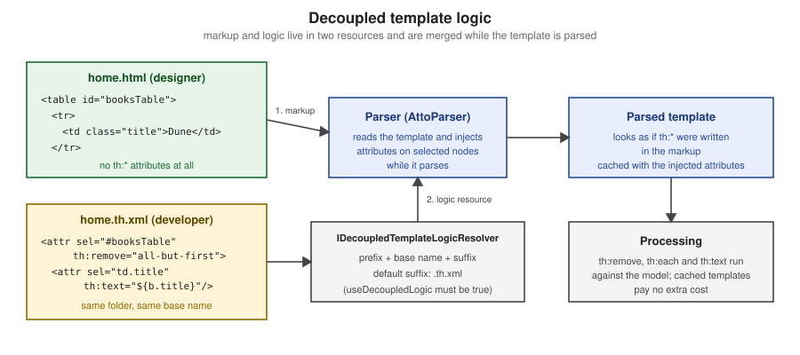

Natural Templates & Decoupled Logic
|
This content was generated with the assistance of AI and should be verified against the official documentation before being relied on in production. |
This page is written against Thymeleaf 3.1.5.RELEASE (2026-04-21), Spring Boot 4.1.1 (Spring Framework 7.0.9) and Java 21, checked on
2026-10-08, and every example was compiled and run on that stack (Maven wrapper, H2 in memory, MockMvc for the rendered output, plus a
standalone TemplateEngine for the custom logic resolver). Natural templates apply to the standalone engine, to Spring MVC and
to Spring WebFlux alike, because they only depend on the Standard Dialect and the HTML template mode. Decoupled logic is a feature of the
engine and its template resolvers, so it also works in all three, but the way it is switched on differs: standalone code configures the
resolver directly, and Spring Boot has no property for it, so a short configuration class is needed (shown below).
The idea behind both halves of the page is the same: a template is a communication artifact between the people who design a page and the people who make it dynamic. A natural template keeps the design usable while the logic is written in it. Decoupled logic goes one step further and moves the logic out of the markup altogether. The running scenario is the Bookshelf introduced on Getting Started; the general idea of a natural template is explained in Introduction & Architecture.
Natural Templates End to End
A template is natural when the file is still a valid, displayable prototype after the logic has been added. Thymeleaf achieves this because most Standard Dialect processors are attribute processors: a browser ignores attributes it does not know, so it simply shows the markup and the prototype text, and the engine replaces the prototype values when it runs. Compare the two halves of this rule:
-
the static value (the body text, the
href, thevalue, theclass) is what a designer sees when the file is opened from disk -
the
th:*attribute is what the server evaluates; it replaces or removes the static value and then disappears from the output
prototype values plus th attributes"] file -->|"double-click in a browser"| static["Static prototype
th attributes ignored,
mock rows and relative paths visible"] file -->|"TemplateEngine.process"| dynamic["Server output
real data, mock rows removed,
context-aware paths"]
Designing for this has a handful of habits. The list below collects them; each one is demonstrated by the example that follows.
-
Keep a realistic prototype value in every element the engine will overwrite (
Duneinside theth:textcell). -
Keep valid HTML: attributes, not extra elements, carry the logic. Where an element is unavoidable (an iteration over two table rows) wrap it in a prototype-only comment block, shown below.
-
Add several mock rows so the prototype looks like a real list, and mark every mock row for removal.
-
Write relative static paths in the plain attribute and the context-aware path in the
th:*attribute, so the file renders in both worlds. -
Use
<!--/* ... */-->for notes that must never reach the browser, whether the template is a prototype or running. -
The
xmlns:thnamespace declaration is optional in the HTML mode: it only keeps IDE validators quiet. The HTML5-friendlydata-th-*form is an alternative that keeps even strict validators happy (see Introduction & Architecture).
The template below is the Bookshelf list written that way. It uses mock rows removed with th:remove, a prototype-only comment block around a
th:block, a parser-level comment, and the dual-path stylesheet and links that the following sections explain one by one.
<!DOCTYPE html>
<html xmlns:th="http://www.thymeleaf.org">
<head>
<meta charset="UTF-8">
<title th:text="'Bookshelf (' + ${#lists.size(books)} + ')'">Bookshelf (prototype)</title>
<link rel="stylesheet" href="../../static/css/site.css" th:href="@{/css/site.css}">
</head>
<body>
<h1>Books</h1>
<!--/* Designer note: the two mock rows below are removed by the server. */-->
<table>
<thead>
<tr><th>Title</th><th>Author</th><th></th></tr>
</thead>
<tbody th:remove="all-but-first">
<tr th:each="b : ${books}" th:class="${bStat.odd} ? 'odd'">
<td th:text="${b.title}">Dune</td>
<td th:text="${b.author}">Frank Herbert</td>
<td><a href="detail.html" th:href="@{/books/{id}(id=${b.id})}">view</a></td>
</tr>
<tr class="odd">
<td>Neuromancer</td><td>William Gibson</td><td><a href="detail.html">view</a></td>
</tr>
<tr>
<td>Hyperion</td><td>Dan Simmons</td><td><a href="detail.html">view</a></td>
</tr>
</tbody>
</table>
<p th:remove="${#lists.isEmpty(books)} ? 'none' : 'all'">No books yet.</p>
<!--/*/ <th:block th:if="${books.size() > 1}"> /*/-->
<p>Several books on the shelf.</p>
<!--/*/ </th:block> /*/-->
</body>
</html>Opened directly from disk, this file shows a heading, a three-row table (Dune, Neuromancer, Hyperion), the "No books yet." line and the "Several books"
line, styled by the relative stylesheet: a perfectly good prototype for a designer. Rendered by the server for two books the output is the following. The
mock rows, the designer’s comment, the th:* attributes and the "No books yet." paragraph are gone:
<!DOCTYPE html>
<html>
<head>
<meta charset="UTF-8">
<title>Bookshelf (2)</title>
<link rel="stylesheet" href="/css/site.css">
</head>
<body>
<h1>Books</h1>
<table>
<thead>
<tr><th>Title</th><th>Author</th><th></th></tr>
</thead>
<tbody>
<tr class="odd">
<td>Snow Crash</td>
<td>Neal Stephenson</td>
<td><a href="/books/1">view</a></td>
</tr>
<tr>
<td>Foundation</td>
<td>Isaac Asimov</td>
<td><a href="/books/2">view</a></td>
</tr>
</tbody>
</table>
<p>Several books on the shelf.</p>
</body>
</html>With an empty shelf the iterated row produces nothing, the table body is empty, and the "No books yet." paragraph is kept because its th:remove
expression evaluates to none. The controller that feeds the template is an ordinary Spring MVC controller; nothing in it knows the template is natural:
@Controller
class NaturalController {
private final BookRepository repo;
NaturalController(BookRepository repo) { this.repo = repo; }
@GetMapping("/natural/books")
String books(Model model) {
model.addAttribute("books", repo.findAll());
return "natural/books";
}
}The Spring tutorial makes the same point about its sample application: after all the form and binding functionality added to the page, the file can still be opened directly in a browser and shows valid HTML with mock data, which is what the tutorial means by calling it a natural template. The official article From HTML to HTML (via HTML) is the original statement of the philosophy. Natural templating is not limited to HTML: the textual modes have their own natural forms (JavaScript and CSS natural templates), and inlining with double square brackets trades naturalness for brevity. Both are covered on the inlining and textual-modes pages of this section.
Prototype-Only Content
Some content exists only to make the prototype look right, and some markup is needed by Thymeleaf but would break the static file. The Standard Dialect
has three tools for this, all dialect-independent comment syntaxes handled by the parser, plus th:remove for elements.
| Syntax | In a browser (static) | When Thymeleaf runs the template |
|---|---|---|
|
An ordinary HTML comment, invisible. |
Removed entirely, content included. Use it for designer notes and for markup that must never reach the output. |
|
An ordinary HTML comment: the markup inside is not displayed. |
The |
|
Ignored: the element is displayed. |
The element, its body or its tag is removed (see below). |
The prototype-only block is the answer to the "extra element" problem. A th:block is the one element processor of the Standard Dialect: an attribute
container that disappears after its attributes are executed, leaving its content. Written as a plain element it would be an unknown tag in the static
file, but wrapped in prototype-only markers it is invisible there and fully active on the server, so the file stays valid:
<!--/*/ <th:block th:if="${books.size() > 1}"> /*/-->
<p>Several books on the shelf.</p>
<!--/*/ </th:block> /*/-->With two books the output contains only <p>Several books on the shelf.</p>, and with one book nothing at all, as the run above shows. The same trick lets
you open a block-level th:each around two table rows (the tutorial uses it for iterations that need more than one <tr>) without adding a forbidden
<div> inside a <table>.
Source: Using Thymeleaf — Thymeleaf prototype-only comment blocks, Using Thymeleaf — Synthetic th:block tag
The textual template modes have their own versions of these blocks (/*[+ ... +]*/ and /*[- ... -]*/, plus the /*[# th:if="..."]*/ natural
JavaScript and CSS forms); they are described on the textual-modes page of this section and are not interchangeable with the HTML syntaxes above.
Mock Rows and th:remove
A prototype needs more than one row, but the engine iterates only the element that carries th:each. Every extra row stays in the output as if it were
real data. The attribute th:remove deletes them when the template runs while leaving them visible in the prototype. It accepts five values, and also
any Standard Expression that evaluates to one of them, which makes it usable for conditional removal:
| Value | Effect | Typical use |
|---|---|---|
|
Removes the host tag and all its children. |
Mock rows and prototype-only blocks. |
|
Keeps the host tag, removes all its children. |
Empty a container that the server fills in some other way. |
|
Removes the host tag, keeps its children. ( |
Unwrap a prototype wrapper element while keeping the content. |
|
Keeps only the first child of the host tag. |
One |
|
Does nothing. |
The "keep" branch of a dynamic expression, such as |
The values are easy to compare on a single template. This one applies each of them to a small block, and the output follows.
<!DOCTYPE html>
<html xmlns:th="http://www.thymeleaf.org">
<body>
<div id="all" th:remove="all"><b>x</b> text</div>
<div id="body" th:remove="body"><b>x</b> text</div>
<div id="tag" th:remove="tag"><b>x</b> text</div>
<ul id="abf" th:remove="all-but-first"><li>one</li><li>two</li><li>three</li></ul>
<div id="none" th:remove="none"><b>x</b> text</div>
</body>
</html><!DOCTYPE html>
<html>
<body>
<div id="body"></div>
<b>x</b> text
<ul id="abf"><li>one</li></ul>
<div id="none"><b>x</b> text</div>
</body>
</html>Two details are worth keeping in mind. First, th:remove has the lowest precedence among the Standard Dialect attributes, so on an element that also
carries th:each, th:if or th:text those run first and the removal happens last (the order is in the tutorial section on attribute precedence, linked below). Second, all-but-first keeps the first child
whatever it is, so the iterated template row must come first inside the <tbody>; otherwise the iterated row is the one that gets removed. Compare it
with the per-row form used by the tutorial, where each mock row has its own th:remove="all": the <tbody> form is shorter and cannot be forgotten on a
newly added mock row.
Static Paths That Work Both Ways
Links and resources are where prototypes usually break: an absolute path such as /css/site.css only works when the application serves the file from the
web root, and it does not resolve when the file is opened from disk. The natural-template answer is to write both: a relative path in the plain
attribute, which the browser uses statically, and a context-relative @{...} link in the th:* attribute, which the server resolves at run time and
which replaces the plain one in the output.
<link rel="stylesheet" href="../../static/css/site.css" th:href="@{/css/site.css}">
<a href="detail.html" th:href="@{/books/{id}(id=${b.id})}">view</a>This works because of the project layout. In a Boot project the template lives in src/main/resources/templates/natural/books.html and the stylesheet in
src/main/resources/static/css/site.css, so the relative path from the template to the stylesheet on disk is ../../static/css/site.css. The same layout
at run time serves the file at /css/site.css, which is what @{/css/site.css} produces. A @{/...} URL starting with a slash is context-relative: the
engine prepends the application’s context path, so the page keeps working when the application is deployed under a prefix. The same two requests, made
with the context path set to /shop, produce:
<link rel="stylesheet" href="/shop/css/site.css">
...
<td><a href="/shop/books/1">view</a></td>The rules of thumb are:
-
Same attribute, two values. Plain
href,srcoractionfor the prototype,th:href,th:srcorth:actionfor the server. The engine replaces the first with the second; nothing of the prototype path is left in the output. -
Relative on disk, root-relative on the server. Count the folders between the template and the static resource, and do not use absolute
file:///paths, which break on every other machine. -
Prototype links to other pages (
detail.html) work when the designer keeps the page files side by side, and are replaced by routed URLs in the output. -
Fragments change the depth. A fragment inserted into pages in different folders is previewed from its own folder, so a relative prototype path inside it can only be right for one place; keep resource links in the layout page, or accept that the static preview of such a fragment shows broken images.
-
Static resources are not templates. They are served by Spring Boot’s static resource handler from
static/(andpublic/,resources/,META-INF/resources/) without going through Thymeleaf. Versioned and fingerprinted asset URLs are the subject of the assets page of this section.
Decoupled Template Logic
Natural templates still contain th:* attributes, and for a designer working with an external tool or a team that wants markup free of any engine syntax
that is still too much. Since Thymeleaf 3.0 the HTML and XML template modes can decouple the logic: the markup file contains no Thymeleaf code, and the
logic lives in a separate logic resource, by default a file next to the template with the same base name and the extension .th.xml:
templates/
decoupled/
home.html
home.th.xml<!DOCTYPE html>
<html>
<body>
<table id="booksTable">
<tr>
<td class="title">Dune</td>
<td class="author">Frank Herbert</td>
</tr>
<tr>
<td class="title">Neuromancer</td>
<td class="author">William Gibson</td>
</tr>
</table>
<p>Total: <span th:ref="total">2</span></p>
</body>
</html><?xml version="1.0"?>
<thlogic>
<attr sel="#booksTable" th:remove="all-but-first">
<attr sel="/tr[0]" th:each="b : ${books}">
<attr sel="td.title" th:text="${b.title}" />
<attr sel="td.author" th:text="${b.author}" />
</attr>
</attr>
<attr sel="total" th:text="${#lists.size(books)}" />
</thlogic>Each <attr> element performs attribute injection: its sel attribute holds a markup selector (an AttoParser selector, the same syntax as the fragment
selectors), and every other attribute of the element is injected into the nodes it selects. The elements can be nested, and the selectors of the inner
elements are appended to those of the outer ones, so sel="/tr[0]" inside #booksTable means #booksTable/tr[0] (the first row, indexes start at
zero), and td.title inside that means #booksTable/tr[0]//td.title. The pair of files above behaves exactly as this single template would:
<table id="booksTable" th:remove="all-but-first">
<tr th:each="b : ${books}">
<td class="title" th:text="${b.title}">Dune</td>
<td class="author" th:text="${b.author}">Frank Herbert</td>
</tr>
<tr>
<td class="title">Neuromancer</td>
<td class="author">William Gibson</td>
</tr>
</table>Rendered for two books the page is the following. The th:remove="all-but-first" injected on the table dropped the prototype rows that follow the iterated
one, so only the data rows remain:
<!DOCTYPE html>
<html>
<body>
<table id="booksTable">
<tr>
<td class="title">Snow Crash</td>
<td class="author">Neal Stephenson</td>
</tr>
<tr>
<td class="title">Foundation</td>
<td class="author">Isaac Asimov</td>
</tr>
</table>
<p>Total: <span>2</span></p>
</body>
</html>Enabling Decoupled Logic
Decoupled logic is not expected for every template by default. A template resolver has to mark the templates it resolves as using it. Every
out-of-the-box ITemplateResolver implementation except StringTemplateResolver (which does not allow decoupled logic) has a useDecoupledLogic flag.
When it is true the engine looks for a logic resource for each template it resolves, parses it and merges it; if the logic resource does not exist
nothing happens and no error is raised, so enabling the flag does not break the templates that have no .th.xml file. The flag applies to the HTML and XML
template modes.
In standalone code and in plain Spring MVC configuration, set it on the resolver:
final WebApplicationTemplateResolver templateResolver =
new WebApplicationTemplateResolver(application);
templateResolver.setUseDecoupledLogic(true);In Spring Boot there is no spring.thymeleaf.* property for it, and the auto-configured resolver is a bean named defaultTemplateResolver
(a SpringResourceTemplateResolver). The configuration below flags it after it is created. A static BeanPostProcessor bean is used so that it is
registered early enough; it is the whole Spring Boot configuration for decoupled logic, and the example in this page was run with it:
@Configuration(proxyBeanMethods = false)
class DecoupledLogicConfig {
@Bean
static BeanPostProcessor decoupledLogicEnabler() {
return new BeanPostProcessor() {
@Override
public Object postProcessBeforeInitialization(Object bean, String name) {
if (bean instanceof SpringResourceTemplateResolver resolver) {
resolver.setUseDecoupledLogic(true);
}
return bean;
}
};
}
}The flag is then true for every template resolved by that resolver, which is harmless but means one extra lookup of a .th.xml resource per template
that is not cached. Keep spring.thymeleaf.cache=true (the default) in production, and false in a local profile if you want edits to the
.th.xml file picked up without a restart (see Spring Boot Auto-Configuration &
Properties). If you declare your own resolver beans instead of using the default one, set the flag on each of them. A project that wants decoupled logic for
only a few templates can add a second resolver restricted by setResolvablePatterns, and leave the default one unflagged.
Mixing Coupled and Decoupled Logic, and th:ref
Decoupling is not all or nothing. In one template you can leave some Thymeleaf attributes in the markup and put others in the logic file. The most
common case is th:ref. It is a marker attribute: it does nothing when the template is processed and disappears from the output, but it can be
selected by name. A selector such as sel="total" matches any <total> tag, any tag with th:fragment="total" and any tag with th:ref="total".
The home.html above uses it on the total counter, and <attr sel="total" th:text="${#lists.size(books)}" /> in the logic file fills it in; the output
shows <span>2</span> with the marker gone.
The advantage over an id or a class is that you do not have to add many HTML attributes just to act as logic anchors, which would end up in the
output (this is the tutorial’s reasoning). The disadvantage is just as plain: a th:ref is a little Thymeleaf in the markup, so a template that must be
completely engine-free should use ids and classes instead. th:ref is not limited to decoupled logic; it works the same inside fragment expressions.
Resolution of the Logic Resource
Where the logic resource is looked up is an extension point: org.thymeleaf.templateparser.markup.decoupled.IDecoupledTemplateLogicResolver, with the default
implementation StandardDecoupledTemplateLogicResolver. That implementation applies a prefix and a suffix to the base name of the template resource
(by default an empty prefix and the suffix .th.xml), then asks the template resource for a resource relative to itself with that name. Changing the
prefix lets the logic files live in a separate folder, which is what a team that splits design files and logic files wants:
final StandardDecoupledTemplateLogicResolver decoupledResolver =
new StandardDecoupledTemplateLogicResolver();
decoupledResolver.setPrefix("../viewlogic/");
templateEngine.setDecoupledTemplateLogicResolver(decoupledResolver);With that setting, templates/decoupled/custom.html takes its logic from templates/viewlogic/custom.th.xml. The run of a ClassLoaderTemplateResolver with
setUseDecoupledLogic(true) and this prefix, over one Book titled T by A, produced:
<!DOCTYPE html>
<html>
<body>
<table id="booksTable">
<tr>
<td class="title">T</td>
<td class="author">A</td>
</tr>
</table>
<p>Total: <span>1</span></p>
</body>
</html>In a Spring Boot application the engine is the auto-configured SpringTemplateEngine bean; apply setDecoupledTemplateLogicResolver to it with the same kind of
post-processor shown above (or inject the bean into a @Configuration class and call the setter once). A different suffix is configured the same way with
setSuffix, and a team can write its own IDecoupledTemplateLogicResolver to look the logic up somewhere else entirely (for example a different storage), since the
tutorial notes that a logic resource does not have to be a file.
Performance Impact
The tutorial describes the cost as extremely small. When a template that uses decoupled logic is not cached, its logic resource is resolved first and parsed into an in-memory list of attributes to inject for each selector. That is the only additional step: the real template is then parsed, and the parser injects the attributes on the fly as it meets the selected nodes, thanks to AttoParser’s node selection. Nodes leave the parser as if the attributes had been written in the template.
The consequence for production is that a cached template is cached with the injected attributes, so once it is in the cache the overhead of decoupled
logic is zero. The measurable cost is the extra parse of the .th.xml when the cache is off or a template is evicted, which is the situation of local
development with spring.thymeleaf.cache=false. The caches themselves are described on
Introduction & Architecture.
The figure summarises the flow of a decoupled template, from the two files to the processing step:

The Designer and Developer Workflow
Natural templates and decoupled logic support two different divisions of labour, and the choice is mostly about who edits which file.
static HTML, CSS, mock rows"] contract["Agree the contract
ids, classes, th:ref names, model names"] design --> contract contract --> natural["Natural template
developer adds th attributes to the same file"] contract --> decoupled["Decoupled logic
developer writes home.th.xml,
markup file stays untouched"] natural --> check["Open the file statically and run the app
both views stay correct"] decoupled --> check check --> iterate["Design changes keep working,
as long as the contract holds"]
A workable routine for a team using natural templates:
-
The designer produces the page as plain HTML with realistic data, several mock rows and relative paths, and opens it in a browser as the only tool needed.
-
The developer adds the
th:*attributes next to the static values, marks the extra mock rows withth:remove, and replaces nothing the designer wrote. -
The designer can keep editing the same file; as long as the
th:*attributes stay on their elements the dynamic behaviour survives, and as long as the static values stay, the prototype still works. -
A test renders the template with a known model and asserts that no mock content or
th:text reaches the output (the example below), which catches a forgottenth:removeearly.
With decoupled logic the routine changes only at the second and third steps: the developer writes a .th.xml file instead of touching the markup, and the designer’s
file stays logic-free (a design tool or an external system can even regenerate it). The price is that a contract is needed: the ids and classes the selectors
rely on (#booksTable, td.title) or the th:ref names must not be renamed carelessly, because a selector that no longer matches silently injects nothing and
the element keeps its prototype text. A short test guards the contract by asserting both that the markup has no logic and that the rendering uses the data:
@SpringBootTest
@AutoConfigureMockMvc
@WithMockUser
class PrototypeTest {
@Autowired MockMvc mvc;
@Autowired BookRepository repo;
@Test
void decoupledMarkupHasNoLogicAndRendersWithIt() throws Exception {
String markup = new ClassPathResource("templates/decoupled/home.html")
.getContentAsString(StandardCharsets.UTF_8);
assertThat(markup).doesNotContain("th:each", "th:text", "th:remove");
repo.deleteAll();
Book book = new Book();
book.setTitle("Snow Crash");
book.setAuthor("Neal Stephenson");
repo.save(book);
mvc.perform(get("/decoupled/home"))
.andExpect(status().isOk())
.andExpect(content().string(containsString("Snow Crash")))
.andExpect(content().string(not(containsString("Dune"))));
}
@Test
void mockRowsAreRemoved() throws Exception {
mvc.perform(get("/natural/books"))
.andExpect(status().isOk())
.andExpect(content().string(not(containsString("Neuromancer"))))
.andExpect(content().string(not(containsString("th:"))));
}
}The two approaches compare as follows:
| Aspect | Natural template (coupled) | Decoupled logic |
|---|---|---|
Markup file |
Valid HTML plus |
Plain HTML or XML, no Thymeleaf syntax (unless |
Where the logic lives |
In the markup, beside the values it replaces. |
In |
Static prototype |
Works; mock rows and relative paths must be marked. |
Works; the file is exactly what the designer wrote. |
Cost |
None. |
One extra parse of the logic file per uncached template; zero when cached. |
Default state |
Always on. |
Off until the resolver sets |
Risk |
A designer may remove an attribute by accident. |
A selector that stops matching fails silently; the contract must be kept. |
Best for |
Teams where developers and designers share files and review them together. |
Strict separation, externally generated markup, or tools that cannot tolerate foreign attributes. |
For the choice between server-side templates and other front-end styles see Introduction & Architecture. The fragments and layouts pages of this section build on natural templates, since fragments and layouts must also remain viewable by themselves.
Pitfalls
| Pitfall | Symptom | Remedy |
|---|---|---|
Mock rows without |
The prototype rows appear after the real data in the output. |
Put |
The iterated row is not first under an |
The real row is removed and a mock row stays. |
Move the |
A bare |
The static file shows nothing, or invalid markup. |
Wrap it in |
Absolute paths in the plain attribute |
Styles and images are missing from the static prototype. |
Use a relative path in |
Decoupled logic never applied |
The rendered page shows prototype text. |
Check |
A selector no longer matches |
One element silently keeps its prototype text. |
Keep ids, classes and |
Expecting decoupled logic in |
No logic is injected. |
It is a feature of the HTML and XML modes with resolvers other than |
Editing a |
Old behaviour persists. |
Disable the template cache in a local profile, or restart. |